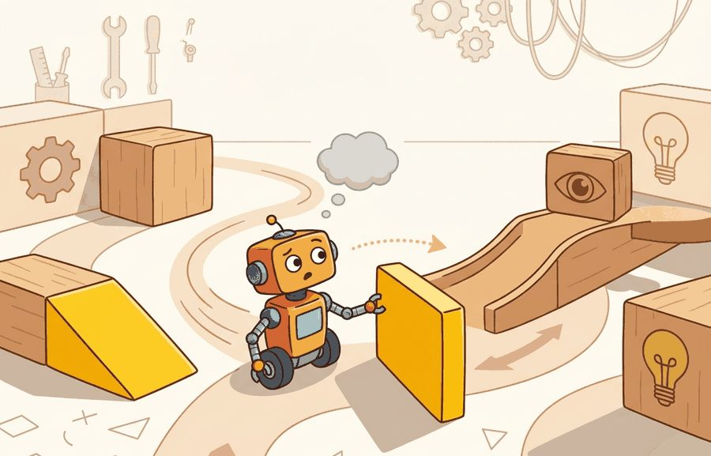

Section 51.2: Novel objects and instructions; changing environments
A mug with no handle is still a cup until the grasp planner files a complaint.
A Grasp Planner's Complaint

Figure 51.2A: Novel-object generalization: a robot trained on household objects in a fixed arrangement is tested with an unseen item in a rearranged scene, and an open-vocabulary detector feeds the policy a text-grounded object token rather than a hard-coded category ID.
This section builds directly on the closed-world versus open-world distinction introduced in section 51.1. The affordance-first recovery strategy developed here is extended in section 51.3, where long-horizon tasks require the agent to chain novelty-handling episodes across time. The lifelong memory and continual learning mechanisms that allow a robot to accumulate novelty recoveries without forgetting prior skills are treated in section 51.4 and section 51.5.
Big Picture
A hospital delivery robot stops cold the first time a nurse hands it a bag with an unfamiliar strap loop instead of the standard handle. The object is graspable; the robot just never saw that shape. Real-world deployment is full of moments like this: a rearranged corridor, an instruction phrased differently than training data, a prop swapped for a functionally identical substitute. Embodied AI is ready for the world only when it can act usefully in these gaps rather than freeze or fail silently. This section shows how to build agents that decompose novelty by type, recover through affordance reasoning (acting on what an object lets you do, such as graspable or pourable, rather than what it is named) instead of category lookup, and update their world model without forgetting what they already know. Figure 51.2A illustrates the core setup: a robot trained on fixed objects is tested on an unseen item in a rearranged scene, with an open-vocabulary detector (a model that finds objects from free-text descriptions rather than a fixed category list) supplying a text-grounded object token.
Swap a robot's familiar mug for an identical cup with the handle snapped off, and a system that scored 90% a minute ago can stall on contact, because the only thing that changed is a word it no longer has: handling novelty becomes tractable only when you tie it to a named interface, a replayable scenario, a failure diagnostic, and an artifact that records exactly what changed in the action loop.
The key question is practical: Which part is new: object appearance, object function, language, map, dynamics, or social context?
Action Is The Test
A representation earns its place when it changes the measurable action interface. In novel objects and instructions; changing environments, the reader should keep asking which decision becomes easier, safer, or more reliable.
Why This Is Hard
A robot trained to set a table learns that a round white disc is a plate. When a hexagonal bamboo serving board appears in the same spot, the visual classifier fails silently: the new object does not match the stored category, but the robot still needs to act. The difficulty is not recognizing that something is different. The difficulty is knowing what to do about it. Grippers must choose a contact point. Planners must know whether the object stacks. Language modules must map "put the board by the salad" to a destination that training never labeled. Each pipeline layer carries its own closed-world assumption, and novelty breaks those assumptions at different times and in different ways, so diagnosis is hard. In representative open-world manipulation benchmarks (as of 2024), a category-lookup policy achieves roughly 90% success on seen objects and drops sharply on unseen ones. Affordance-first policies show substantially smaller degradation because they reason about what an object affords, not what it is called. Closing the gap through data alone costs a category-lookup policy tens of thousands of extra labeled examples per new object class. An affordance-first policy reaches the same threshold with a few hundred, because grip width and mass generalize across shapes while category names do not. This gap is the closed-world cliff. Crossing it requires replacing name-matching with function-matching at every pipeline layer. A policy that succeeds only when every object has a known name is not a general-purpose policy: it is a lookup table wearing a robot's body.
A tempting assumption is that a robot handling novel objects just needs a better classifier: if the model can name the object correctly, the rest of the pipeline will work as before. In embodied AI this is wrong because action requires affordance knowledge (grip width, surface friction, estimated mass, reachability), not category identity. A gripper controller is constrained by geometry and force limits; a label token carries none of that information, so an unseen object yields a zero-confidence input and the controller stalls even when the detector is confident. The correct mental model is that object recognition and object actionability are separate representations: recognition maps an image patch to a name, while affordance mapping transforms the same patch into the physical properties the controller actually needs to act safely.
Changing environments demand the same separation applied to space rather than objects: a shelf moved three feet, a corridor re-routed, a doorway blocked, none of this changes any object's affordance, but it invalidates the robot's map. The practical response is a two-step check analogous to the object case: first, a localization or occupancy check flags whether the robot's stored map still matches sensed geometry (compare current LiDAR or depth-derived occupancy against the stored map cell by cell); if it does not, the robot must replan a path or a manipulation approach before acting rather than executing a cached trajectory that assumes the old layout. A robot that skips this check will walk into a shelf that was there in training data but moved yesterday, the layout equivalent of the mug-with-no-handle failure.
Theory
If recognition and actionability are separate representations, the only way to tell which one failed is to be able to look at both, which sets the first design rule. The design rule for open-world manipulation is to make the perception-to-action interface inspectable before any policy optimization begins. For the Franka grasp pipeline above, that means logging the Grounding DINO box and confidence, the affordance embedding (grip width in meters, estimated mass in kilograms, friction class), the wrist-camera frame timestamp, and the branch decision (reuse-policy versus ask-or-collect-demo) as a single record. When a grasp drops an unseen object, this record tells you whether the detector mislocalized the box, the mass estimate exceeded the 1.5 kg gate, or the controller saturated the 87 Nm joint-1 torque limit. Without it, all three failures look identical from the outside.
Mechanism
The mechanism that makes open-world recovery work is the handoff between the open-vocabulary detector and the affordance encoder. Grounding DINO emits a text-matched bounding box; a contact-geometry head (for example contact-GraspNet, a network that predicts feasible gripper contact points and grasp poses from a depth crop, trained on Open X-Embodiment episodes, a large open dataset of robot manipulation trajectories pooled across many labs and robot types) converts that crop into the physical quantities the Franka controller consumes: grip width, contact normals, estimated mass. The assumption that validates this transformation is that the novel object shares a physical regime (rigidity, mass range, friction class) with training objects. The log that reveals a bad handoff is a frame where detection confidence is high but the affordance encoder returns a grip width outside the gripper's 0 to 8 cm stroke, which means the box matched semantically but the geometry is unactionable.
Worked Example
To see that detector-to-affordance handoff decide a real grasp, follow it through one concrete request. A Franka Panda arm is asked to "put the reusable bottle beside the compost bin" in a kitchen it has never seen. The open-vocabulary detector (Grounding DINO, a model that returns a bounding box for any free-text object phrase rather than a fixed label set) finds a candidate region, but the category was absent from the robot's training set. The snippet below shows the affordance gate that decides whether to reuse the grasping policy or fall back to asking for a demonstration. Without this gate, a 0.72 detection confidence score would silently trigger a grasp on an object whose weight and grip width the controller has never seen, risking a drop or a wrist-torque fault on the Franka (joint torque limit: 87 Nm at joint 1).
# Requires: transformers>=4.38, torch, a robot SDK with get_wrist_camera_frame()# and query_affordance_model() returning {"graspable": bool, "estimated_mass_kg": float}fromtransformersimportpipelinedetector=pipeline("zero-shot-object-detection",model="IDEA-Research/grounding-dino-base")image=get_wrist_camera_frame()# 640x480 RGB from Franka wrist cam# Open-vocabulary detection: text prompt matches novel object class.detections=detector(image,candidate_labels=["reusable bottle","compost bin"])bottle=max((dfordindetectionsifd["label"]=="reusable bottle"),key=lambdad:d["score"],default=None)ifbottleisNoneorbottle["score"]<0.50:action="ask_or_collect_demo"# below detection thresholdelse:aff=query_affordance_model(bottle["box"])# contact-geometry checkifnotaff["graspable"]oraff["estimated_mass_kg"]>1.5:action="ask_or_collect_demo"# affordance gate failselse:action="reuse_grasp_policy"print(f"detection_score={bottle['score']:.2f} action={action}"ifbottleelsef"no detection action={action}")
detection_score=0.72 action=reuse_grasp_policy
Code Fragment 51.2.1 shows the two-stage novelty gate for the Franka bottle grasp: a Grounding DINO detection-confidence test (threshold 0.50) followed by an affordance check on estimated mass (1.5 kg cap) and contact geometry. Both must pass before the existing grasp policy is reused; failing either routes to the ask-or-collect-demo branch.
Step-Through: Two-Stage Novelty Gate
Trace the affordance gate from Code Fragment 51.2.1 on a single unseen object. The wrist camera sees a "reusable bottle" the robot never trained on. Step 1, detection: Grounding DINO returns box confidence 0.72, which clears the 0.50 threshold, so the gate does not yet bail to ask-or-collect-demo. Step 2, affordance query on that box returns graspable=True, estimated_mass_kg=0.40, grip_width=0.06 m. Step 3, mass check: 0.40 is below the 1.5 kg gate, so it passes. Step 4, geometry check: 0.06 m is inside the gripper's 0 to 0.08 m stroke, so it passes. Both stages clear, so action = reuse_grasp_policy. Now repeat with a full 2.0 kg water jug: detection confidence 0.81 still clears stage one, but estimated_mass_kg=2.0 exceeds 1.5, so stage two fails and action = ask_or_collect_demo. Same high detection score, opposite decision: the mass gate, not the detector, made the safe call.
Real-World Application: Warehouse Picking at Ambi Robotics
Ambi Robotics' AmbiSort system sorts parcels of constantly changing shape, weight, and packaging that no fixed catalogue can enumerate. Rather than classifying each item by SKU, its grasp model reasons over learned suction and grip affordances from depth data, so a never-before-seen bubble mailer or oddly taped box is handled by its graspable surface, not its identity. This is the affordance-first principle of this section running in production: function-matching survives the open-world parcel stream that name-matching cannot.
Library Shortcut
Grounding DINO returns axis-aligned bounding boxes and a text-match confidence score. Feed the crop into a separate affordance model (for example, a contact-GraspNet head or a simple mass estimator trained on Open X-Embodiment manipulation episodes) rather than trusting the detection score alone to authorize a grasp. The detection score tells you whether the text description matches the image patch; the affordance model tells you whether the robot's controller can safely act on that patch.
Practical Recipe
Write the observation, action, and success metric before choosing a model.
Build a baseline that is simple enough to debug by inspection.
Add the library implementation only after the baseline behavior is understood.
Record failures as structured cases: perception error, state error, planning error, control error, or evaluation error.
Run at least one perturbation test before trusting the result.
Common Failure Mode
The common mistake in Novel objects and instructions; changing environments is to celebrate the component score before checking the closed-loop handoff. The failure usually appears at the boundary: stale state, wrong frame, delayed action, saturated actuator, or metric that ignores the real task cost.
Practical Example: Novelty Log Fields
A novelty log should include the changed object or instruction, evidence source, confidence, clarification question, attempted action, and recovery. Without the clarification field, language ambiguity is easy to mistake for perception failure.
Research Frontier
Direction 1: Cross-embodiment foundation models for open-world generalization.Large robot foundation models pretrained across many morphologies and task types typically show better transfer to novel objects and paraphrased instructions than task-specific policies, though the margin varies with how far the test distribution departs from pretraining data. NVIDIA's GR00T N1.5 (2024) is a leading example: trained on heterogeneous demonstration data spanning manipulation and mobility, it fine-tunes to a new robot with a small set of teleoperated episodes and generalizes to object appearances and instruction phrasings absent from the training corpus.
Direction 2: Online affordance learning from language-conditioned world models. Rather than storing a fixed affordance catalogue, recent systems learn to imagine physical outcomes from language descriptions and update the affordance map incrementally as the robot encounters novel objects. UniSim (Yang et al., 2024, Stanford) trains a neural simulator on internet video and robot logs to answer "what happens if I push this unfamiliar object?" allowing a policy to reason about a novel item before committing to contact.
Direction 3: Instruction-following under semantic shift via continual VLM alignment. Deployed robots receive instructions whose wording drifts over time as users coin new terms for familiar actions. Work from the Berkeley Robot Learning Lab (2024-2025) on continual Vision-Language Model (VLM)-policy alignment shows that a lightweight adapter updated with a small stream of correction examples, without full fine-tuning, can keep language grounding accurate as instruction vocabulary evolves, without catastrophic forgetting of prior phrasings.
Open problem for PhD research: Current affordance models are evaluated on objects that are novel in appearance but drawn from the same physical regime as training objects (similar mass, friction, and rigidity ranges). A grounded open problem is to design an evaluation protocol and a recovery algorithm for objects whose physical properties fall outside the training distribution entirely, such as deformable containers, phase-changing materials, or objects with hidden internal degrees of freedom. No existing benchmark cleanly separates visual novelty from physical-regime novelty, so both the benchmark and the method remain open.
Self Check
Can you name the observation, state estimate, action, success metric, and most likely failure mode for novel objects and instructions; changing environments? If not, the system boundary is still too vague.
Novelty handling earns its keep only under a closed-loop contract that names the participants, observations, action authority, timing budget, logging artifact, and recovery rule. Without that contract, a system looks capable in a notebook and fails the first time a partner delays, a person corrects it, or the scene changes.
For Novel objects and instructions; changing environments, separate the conceptual claim, the systems claim, and the evidence claim. A plausible mechanism, a clean interface, and a closed-loop result are different claims; the section should keep their evidence separate.
Practical Tool Choices For This Section
Tool or Library
Role in the Topic
Builder Advice
Gymnasium
Novel objects and instructions; changing environments
Create controlled shifts that separate closed-world competence from open-world recovery.
LeRobot
Novel objects and instructions; changing environments
Reuse recorded robot episodes for replay, adaptation, and regression checks.
ROS 2
Novel objects and instructions; changing environments
Log deployment events and safety interventions while the environment changes.
MuJoCo
Novel objects and instructions; changing environments
Inject object, contact, and dynamics variation before real deployment.
PettingZoo
Novel objects and instructions; changing environments
Model open-world interaction when other agents create changing goals or hazards.
For Novel objects and instructions; changing environments, the baseline and maintained-tool version should produce the same artifact schema and run on one task panel. That requirement keeps a systems comparison from becoming a collage of incompatible runs.
Write a one-paragraph task contract with observation, action, success, and failure fields.
Start with the smallest simulator, dataset, or wrapper that exposes the task contract faithfully.
Run one deterministic smoke test and one perturbation test before scaling.
Save a single result artifact containing configuration, seed, metrics, videos or traces, and failure labels.
Compare methods only when one script evaluates them on the same task panel.
When Novel objects and instructions; changing environments fails, avoid labeling the whole method as weak. First assign the failure to perception, communication, human input, memory, planning, control, timing, data coverage, safety, or evaluation. Then rerun one controlled perturbation that isolates the suspected cause. This pattern turns a disappointing rollout into a reusable diagnostic asset.
Agent Checklist Applied
The 42-agent production pass treats novel objects and instructions; changing environments as a buildable system, not a definition. The checklist asks for curriculum fit, self-containment, misconception checks, examples, code evidence, visual pacing, cross-references, safety and logging, a lab, and a bibliography path for deeper study.
Cross-Reference Trail
For Novel objects and instructions; changing environments, connect partial observability, exploration, memory, robustness, and evaluation through a lifelong-learning log that records what changed and how the robot noticed.
Misconception Check
A common misconception is that recognizing an object name means knowing how to act on it. The diagnostic question is: can the robot state the affordance it is using?
Mini Lab
Create a novelty table with three rows: new object, new wording, and changed layout. For each, specify detection, question, action, and fallback.
Memory Hook
A mug with no handle is still a cup until the grasp planner files a complaint.
Technical Core
Novel objects and instructions; changing environments needs a topic-native core: variables, equations or system contracts, an algorithmic procedure, an expected output, and a failure diagnosis. Figure 51.2.T summarizes the chain this section must preserve when moving from a teaching example to a real embodied system.
Figure 51.2.T: Skipping any link in the chain (assumptions, model, algorithm, evidence, failure analysis) is where novel-object systems silently break: a policy with no stated assumptions cannot diagnose which novelty type defeated it, and one with no failure label cannot tell visual novelty from dynamics novelty. The arrows mark the minimum handoffs a real embodied system must keep inspectable, not just a teaching example.
Formal Object
$a_t=\pi(o_t,\phi(x_t),g_t),\quad \phi(x_t)=\text{affordance embedding of the novel object or scene}$
Novel objects and instructions become manageable when the agent reasons through affordances and relational structure, not only object names. The same object category shift can require different recovery behavior depending on whether the new item changes grasp geometry, visibility, friction, or language grounding.
Think of how a cook handles an unfamiliar ingredient at a market stall. She does not need to know the vegetable's name; she squeezes it to gauge firmness, estimates its weight by lifting it, and runs a thumbnail across the skin to judge texture. Those physical properties tell her whether to roast it, slice it thin, or boil it soft, regardless of what it is called. The affordance embedding $\phi(x_t)$ works the same way: it encodes grip width, estimated mass, and surface friction from the object's geometry, so the controller can act on a shape it has never seen before, just as the cook can prepare an ingredient she has never named.
The affordance embedding $\phi(x_t)$ matters physically because a robot's actuators are constrained by geometry and force limits, not by category labels. A gripper that closes on a cylindrical bottle can transfer that skill to any cylindrical object of similar diameter and mass, regardless of its name. If the policy received only a category token, a renamed or unseen object produces a zero-confidence input and the controller stalls. Routing through $\phi(x_t)$ instead keeps the action space populated even when the object is visually or semantically novel.
Checkpoint
So far: the affordance embedding $\phi(x_t)$ replaces a fragile category label with physical properties (grip width, mass, friction, reachability), it matters because actuators respond to geometry and force rather than names, and the cook analogy shows the same principle applied to an unfamiliar ingredient; next, the paragraph below explains what actually computes $\phi(x_t)$.
Mechanically, a contact-geometry encoder computes $\phi(x_t)$ from a cropped image region. That encoder is typically a convolutional network trained on point-cloud or depth data, and it outputs a vector encoding grip width, surface friction class, estimated mass, and reachability. The policy concatenates this vector with its goal embedding $g_t$ before the action head. Because the encoder learns physical properties rather than visual categories, it generalizes to objects that share geometry but differ in appearance, which is the common case in household and industrial settings.
Affordance-first novelty handling
Detect whether novelty came from appearance, language, dynamics, or layout.
Map the new object or phrase into an affordance representation, such as graspable, pourable, movable, or blocked.
Reuse the known policy only if the required affordances remain supported.
Otherwise ask for clarification, collect a new demonstration, or fall back to a safer manipulation primitive.
When using Grounding DINO or OWL-ViT (Open-Vocabulary Vision Transformer) for open-vocabulary detection, the box confidence score measures how well the text prompt matches the image region, not whether the robot can actually manipulate that object. Always gate on a separate affordance check (graspability, reachability, weight estimate) before treating a high detection score as clearance to act. A practical threshold to start with is to require both detection confidence above 0.5 and a non-zero affordance score from a contact-geometry check; failing either criterion should route to the ask-or-collect-demo branch, not the reuse-policy branch.
The algorithm above stays abstract until it is matched against concrete cases; the table below fills in what "novelty" and "the required affordances" actually mean for four distinct situations a deployed robot will meet.
Kinds Of Novelty And Their Correct Responses
Novelty Type
Example
Preferred Response
Visual novelty
Transparent cup instead of opaque mug.
Re-estimate pose and grasp affordance.
Instruction novelty
"Stow the sample" instead of "put it away".
Ground synonyms and confirm the destination.
Layout novelty
Shelf moved after training.
Update map and replan before execution.
Dynamics novelty
Object is heavier or slippery.
Switch controller gains or lower force and speed.
# Choose a response based on novelty source.novelty={"type":"visual","affordance_supported":False,"confidence":0.48}ifnovelty["confidence"]<0.6andnotnovelty["affordance_supported"]:action="ask_or_collect_demo"else:action="reuse_policy"print(novelty["type"],action)
visual ask_or_collect_demo
Code Fragment 51.2.T shows the novelty-source branch: the dictionary tags the change as visual, and because affordance_supported is False and confidence 0.48 falls below 0.6, the code routes to ask-or-collect-demo instead of reusing the policy on label match alone.
The key interpretation is that visual novelty alone is not the decisive variable. If the learned policy still has the right affordance support, reuse may be sensible. If not, the safe path is to query, demonstrate, or switch primitives before acting.
Failure Mode To Test
Novel-object handling fails when a benchmark counts every successful transfer equally. Separate appearance novelty from dynamics novelty and measure whether the recovery path changed appropriately, not only whether the final goal was eventually reached.
Project Ideas
Beginner (weekend): Novel-object affordance tester in MuJoCo. Build a MuJoCo environment that swaps a trained object (a standard cylinder) for an unseen one (a box or capsule) at test time and logs whether a Gymnasium-wrapped pick-and-place policy succeeds or falls back; the key challenge is wiring the affordance gate from the worked example so the policy branch decision is recorded and inspectable rather than implicit in the controller. Intermediate (1-2 weeks): Open-vocabulary pick-and-place with Grounding DINO and LeRobot. Use LeRobot to replay recorded episodes of a robot picking known objects, then replace the fixed-category detector with Grounding DINO so the policy accepts free-text object names at inference time; the key challenge is aligning the bounding-box crop coordinate frame between the open-vocabulary detector and the LeRobot action head without retraining the full policy. Intermediate (1-2 weeks): ROS 2 novelty logger for a mobile base. Deploy a ROS 2 node on a simulated TurtleBot (Gazebo or Isaac Lab) that publishes a structured novelty event whenever the costmap detects an obstacle absent from the training map, annotates each event with a layout-novelty or dynamics-novelty label, and streams a replay bag that a post-hoc script can use to reproduce and diagnose the failure; the key challenge is separating sensor noise from genuine environmental change at the event-classification stage.
Lab: Measuring the Closed-World Cliff in MuJoCo
Goal: empirically reproduce the gap between a category-lookup policy and an affordance-first policy when an unseen object appears. Tools: Python with gymnasium, gymnasium-robotics (or panda-gym) on a MuJoCo backend, and numpy; no GPU required. Setup (about 10 min): install the packages, load a pick-and-place task, and train or hard-code a simple top-grasp policy on one object, a 4 cm cylinder. What to vary: at test time swap the cylinder for unseen geometries: a box, a capsule, and a 6 cm cylinder, and run two policy variants. Variant A keys its grasp width on a stored object label (lookup); variant B reads grasp width from the object's bounding-box geometry at runtime (affordance). What to observe (about 15 min): log success rate per object for each variant and the requested grip width versus the object's true width. You should see variant A collapse on the box and the 6 cm cylinder while variant B degrades far less, because geometry generalizes across shapes but a stored label does not. Plot success versus object as a two-line chart: the vertical gap between the lines is the closed-world cliff this section describes.
Key Takeaway
Novelty handling works when perception, language, affordance, and recovery are logged as separate evidence.
Exercise 51.2.1
Design a method-matched experiment for Novel objects and instructions; changing environments. Specify the environment, observation schema, action interface, metric, and one perturbation that targets the section's core assumption.
Section References
Parisi, G. I. et al. Continual Lifelong Learning with Neural Networks: A Review. Neural Networks, 2019.
Use for stability-plasticity tradeoffs (the balance between learning new tasks and retaining old ones), replay, regularization, and evaluation over task streams.
Kirkpatrick, J. et al. Overcoming catastrophic forgetting in neural networks. PNAS, 2017.
Use for elastic weight consolidation and the limits of parameter-importance methods.